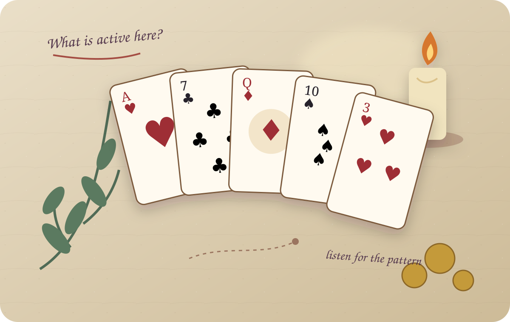

45-minute consultation
$150
Choose a live call or written consultation. We’ll look at the situation through rootwork, discuss what may be spiritually active, and identify work you can perform yourself.
Request Guidance Only
When practical advice hasn’t touched the whole situation, a grounded rootwork consultation can help you look at what may be active spiritually and decide what kind of support fits.
Maybe the numbers make sense but the situation still feels heavy. Maybe the same obstacle keeps returning. Maybe you want support that doesn’t ask you to ignore the spiritual side of your life.
When you keep trying surface fixes for something that feels deeper, you can lose time, energy, and confidence while the real question remains unanswered. A grounded consultation gives you space to look at the whole situation and move with greater clarity.

I’m a practicing rootworker and eclectic witch, and I graduated from catherine yronwode’s Lucky Mojo Hoodoo Rootwork Correspondence Course in 2015.
My approach is direct, personal, and grounded. I listen to what’s happening, look at the situation through the lens of rootwork, and explain the kind of work that may support your goal.
Begin with a focused consultation, then decide whether you want guidance only or support with the work itself.
Choose a live call or written consultation. We’ll look at the situation through rootwork, discuss what may be spiritually active, and identify work you can perform yourself.
Request Guidance OnlyThe consultation comes first. When work is selected, I’ll perform the agreed conjure work on your behalf, such as candle work or a mojo bag. Materials and a follow-up check-in are included.
Request Consultation + WorkBegin with a safe conversation about what’s happening in your money life, then explore the spiritual side in a separate rootwork consultation.

I read traditional playing cards rather than tarot, using symbolism and story to bring a different kind of reflection to the questions people carry. Join the First Draw List to hear when private appointments open.
Traditional spiritual work using prayer, herbs, candles, roots, petitions, and other tools with intention.
A wider personal practice shaped by study, discernment, and what has proven meaningful over time.
Attention, expectation, and aligned action used alongside practical choices and real-world needs.
Every consultation begins with listening and discernment. We’ll choose an intentional, personalized approach that honors your goal, respects the tradition, and gives you a clear understanding of what comes next.
Choose the service you’re interested in and share enough context for me to understand what kind of support you’re seeking.